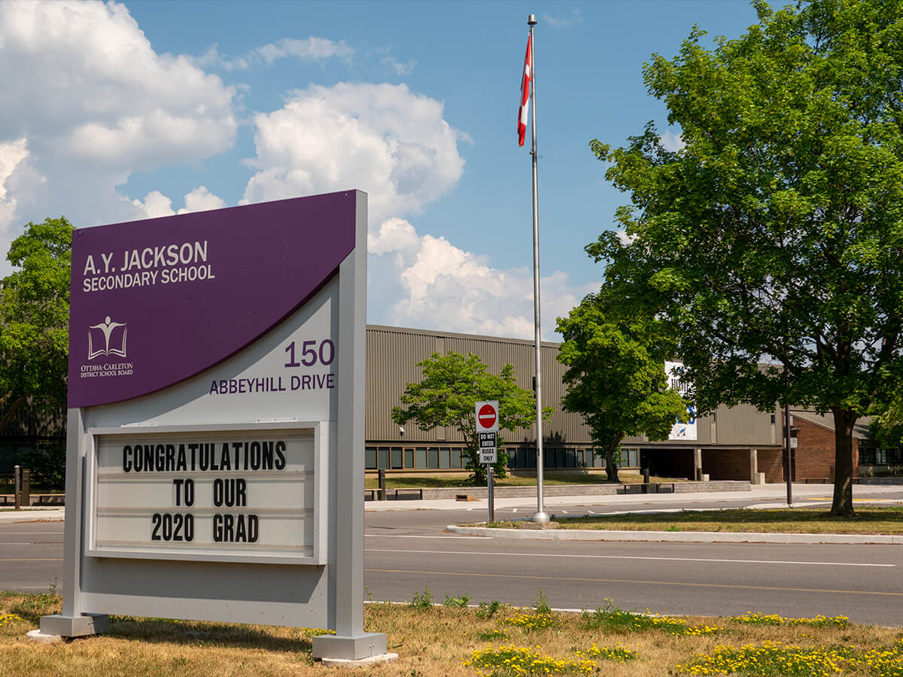

A.Y. Jackson
A.Y. Jackson
Home of the Jays.
At A.Y. Jackson Secondary School, I have completed my studies in French Immersion throughout the four years while also participating in numerous extracurricular activities and clubs. I have been certified with a DELF B2 proficiency, graduated with an Advanced Placement (AP) university credit in French, and completed the OCDSB International Certificate Program with Honours.
Awarded for outstanding contribution to school life and dedication to community involvement.
Awarded for achieving the highest grade in Music Repertoire (AMR4M) between all Grade 12 students during the 2019-2020 school year.
Awarded for the completion of four French Immersion courses and six additional courses taught in French.
Awarded for achieving an average of over 90% in all courses taken in the 2019-2020 school year.
Awarded for achieving an average of over 80% in my top six Grade 12 courses.
Awarded for outstanding academic achievement during my final school year.
The completion of the OCDSB International Certificate Program designates a student with extensive engagement and awareness regarding the global world. Throughout their studies in secondary school, students partaking in the program study international languages, attend classes focusing on the global world, and develop a broad understanding of global issues.
Internationally certified by the Centre international d'études pédagogiques, an institution of the French Education Ministry, the DELF B2 level designates a degree of independence in the French language such that enrollment in French-speaking universities is permitted.
Awarded for musical excellence in Senior Band.
Awarded for achieving the highest grade in Computer Science (ICS4U) between all Grade 11 and 12 students during the 2018-2019 school year.
Awarded for achieving an average of over 90% in all courses taken in the 2018-2019 school year.
Rehearsing together twice a week with bandmates during the school year, we participated in the 47th MusicFest Canada and were awarded as one of the Silver Medalists.
Rehearsing together twice a week with bandmates during the school year, we participated in the 2019 Capital Region Music Festival and were awarded as one of the Gold Medalists.
Awarded for achieving the highest grade in English (ENG2D) between all Grade 10 students during the 2017-2018 school year.
Awarded for achieving the highest grade in French Immersion (FIF2D) between all Grade 10 students during the 2017-2018 school year.
Awarded for achieving the highest grade in Level 2 Spanish (LWSBD) between all Grade 10 students during the 2017-2018 school year.
Awarded for achieving an average of over 90% in all courses taken in the 2017-2018 school year.
Rehearsing together twice a week with bandmates during the school year, we participated in the 2018 Capital Region Music Festival and were awarded as one of the Gold Medalists.
Rehearsing together twice a week with bandmates during the school year, we participated in the 2018 Capital Region Music Festival and were named as the Most Outstanding Concert Band out of 83 bands across Eastern Ontario and Western Quebec.
Awarded for achieving the highest grade in Music (AMU1O) between all Grade 9 students during the 2016-2017 school year.
Awarded for achieving an average of over 90% in all courses taken in the 2016-2017 school year.
Rehearsing together twice a week with bandmates during the school year, we participated in the 2017 Capital Region Music Festival and were awarded as one of the Gold Medalists. In addition, we were the first junior concert band to achieve Gold at A.Y. Jackson.
Awarded for achieving a 4++ mark in several composition works.
Coding Club presents opportunities for students to learn new programming languages and collaboratively participate in hackathons and programming contests, such as the University of Waterloo’s Canadian Computing Competition.
In Concert Band, I play the alto saxophone and have previously played percussion instruments. Rehearsing semiweekly, we play seasonal concerts and during school night events, such as Arts Night. We also participate in the annual Capital Region Music Festival competition, which brings in schools across Eastern Ontario and Western Quebec.
Diversity Club aims to create and promote a safe and welcoming space for students of the 2SLGBTQ+ community through advocacy, education and mutual connection. We engage in multiple events uniting students across the city, and we help support charitable organizations by running local events.
The A.Y. Jackson Environmental Council aims to reduce the school's overall environmental impact through the implementation of new policies, such as the introduction of green bins for compostable waste, as well as the emphasis of our daily impacts on the environment.
Health Science Club organizes and runs events that provide students the opportunity to develop experience and knowledge in the healthcare industry, as well as connect with like-minded individuals. These events additionally prepare students for the HOSA competition in the summer.
In Jazz Band, I played the baritone saxophone from September 2017 to June 2018, and currently play the alto saxophone. Rehearsing semiweekly, we play seasonal concerts and during school night events, such as Arts Night.
ManUp aims to prevent sexual violence against men and women, as well as to promote safe dating practices through advocacy and education. We run local events, such as seminars and school assemblies, to emphasize the impacts on students and those around them.
Me to We Club, formerly known as Alter Reality, aims to raise funds for WE initiatives by running fundraisers in the local community. These initiatives include providing access to education, clean water, medical care, and more for citizens in developing countries.
Similar to Me to We Club, the A.Y. Jackson MEDLIFE Chapter aims to raise funds for the MEDLIFE Moving Mountains program by running fundraisers in the local community. This initiative creates sustainable and large-scale solutions for issues impacting communities living in poverty.
The OCDSB International Certificate Program recognizes students who demonstrate commitment to being informed and engaged global citizens through the discovery of the world. Students complete the program by learning international languages, partaking in internationally-focused activities and classes, comprehending issues affecting the world, and more.
I have completed the program with the Honours designation, indicating thorough commitment by learning multiple languages and engaging in additional international experiences.
Outers Club engages students in physical outdoor activities throughout the year, such as hiking and exploring caves, and cycling.